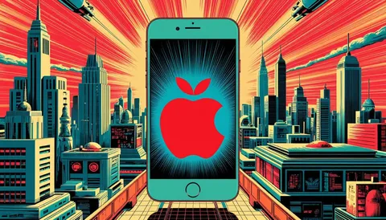

В продолжение вчерашней темы. Как же мы пришли к такому унынию? Конечно же, во всем виноват Стив Джобс. Именно с появления первого айфона началась мобильная революция, бесславно закончившаяся этими безликими черными кирпичиками. Попытки упихать всю консьюмерскую электронику в один девайс диктуют форм-фактор. Культура потребления всего контента с телефона требует большой экран. Вот и все, шаг вправо, шаг влево - никуда ты больше не денешься от необходимости делать что-то большое, плоское, но все еще влезающее в карман.
А плюсы будут? Будут. Смартфоны поменяли наш образ жизни, сделав нас мобильнее и автономнее. И айфоны - особенно. Помню шок от впервые увиденной на экране айфона консоли продакшен-сервера году в 2011. Можно считать это просто умелым маркетингом, можно предположить техническое первенство и превосходство решений, но факт остается фактом - есть айфоны, и есть вся остальная безликая китайская братия.
У меня пару лет назад даже было опасение, что подобная судьба ждет автомобильную индустрию - что будет Тесла, и будет вся остальная безликая китайская фигня. А ауди, мерседес, бмв, тойоту постигнет судьба сименса, нокии, эриксона. Но вроде обошлось, тесла скатывается, немцы и японцы держатся. Скрестил за них пальцы.
Так чем же iPhone/iOS лучше андроида? Да примерно всем, да простят меня красноглазые друзья с рутом и непорезанным NFC.
Во-первых, экосистемой, которую можно ставить в пример любой корпорации с широкой продуктовой линейкой. Никому больше не удается так замкнуть на себе пользователя, дав бесшовный опыт пользования своими продуктами. Эффект магии при добавлении нового устройства приковывает с каждым разом лишь сильнее.
Во-вторых, вниманием к деталям. Тот самый look&feel, который и сам Apple превносит в каждое действие со своей продукцией, и разработчикам приложений под ios транслирует как немаловажную ценность. Из недавнего - то, как в свежей версии "прогибается" граница экрана при нажатии на кнопку включения - ну это же чистый восторг, хотя мелочь уровня "зачем тратить время на такую ерунду". Но из такой ерунды складывается опыт пользователя.
В-третьих целостностью эргономики, которая также сквозит в гайдах для разработчиков приложений. Например, не так давно мы в Еде добавили кнопку-поплавок "вверх", возвращающую пользователя к началу выдачи на главной странице. Я сначала не понял - зачем, можно же просто коснуться верхнего края экрана, это во всех приложениях на ios возвращает в начало скролла. А потом как понял - чтобы интерфейс выглядел консистентно с андроидом, где подобного паттерна нет. И вот такие паттерны, общие для всех приложений по гайдам, тоже составляют чувство эргономичности и легкости использования любого приложения.
Кстати, замечал еще, что ios-разработчики выглядят более счастливыми и раскрепощенными своих андроид-братьев. Видимо, эта легкость бытия и уверенность, что ты делаешь что-то удобное и красивое, экстраполируется с продукта на его разработчиков. А один мой коллега из Еды ведет весьма хардкорный канал про разработку под ios - всем читателям из профессионального комьюнити братский рекомендасьон - @iosmakesmehate
А я пару раз, задумавшись о собственной объективности и поддавшись на аргументы вида "да ты что, андроид уже не тот, что был в 2010", пробовал слезть с яблочной иглы и пересаживался на андроид, и каждый раз довольно быстро возвращался в уютный мир скевоморфных пони и look&feel-единорогов, ворча о том, насколько все через одно место сделано в этом вашем ведроиде. Так что стоим на своем и с нетерпением ждем очередную смену радиуса кривизны углов на будущем айфоне (или чем там они отличаются от предыдущих).
